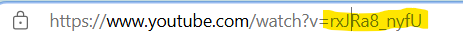

Youtube
Le Composant YouTube Player est un outil simple et efficace qui permet d'intégrer facilement des vidéos YouTube dans vos applications web. Ce composant fournit une interface utilisateur intuitive pour lire, mettre en pause, avancer ou reculer dans les vidéos, tout en respectant les bonnes pratiques d'accessibilité.
Comment l'utiliser :
Sur la balise div de la section html voulu. Appliquer le data component youtube
sur la meme ligne on va ajouter le lien youtube!
